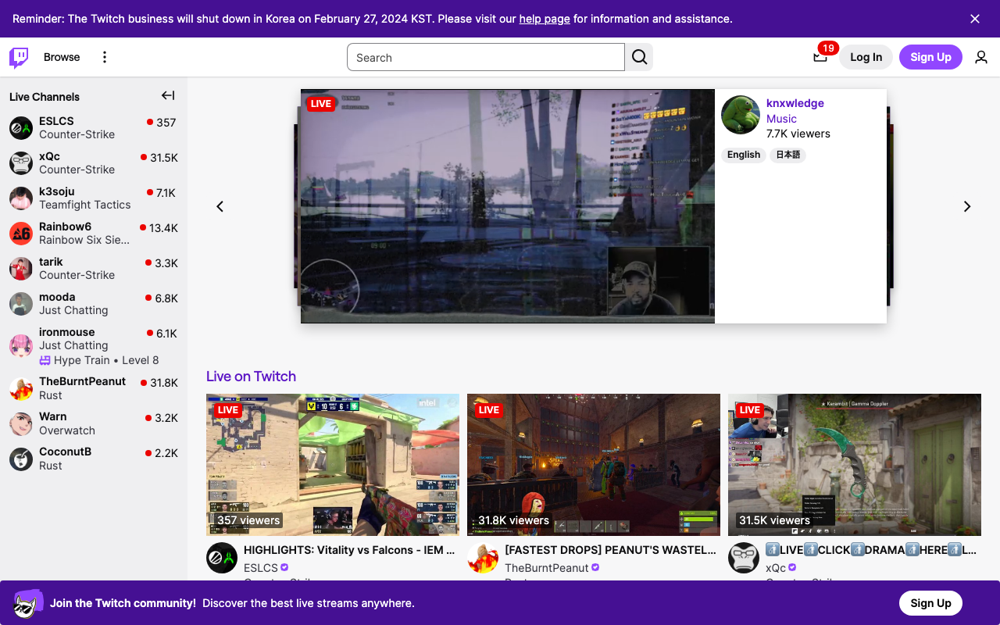

#9147FF + pink gradient · 게이밍 네온 퍼플
Twitch · https://www.twitch.tv · Fetched 2026-04-20

Twitch는 게임 스트리머 문화를 그대로 색으로 번역한 Streamer Purple 시그니처 — #9147FF primary와 그 hover pair #A970FF / dark-hover #772CE8로 완성된다. Slack의 aubergine과 완전히 다른, 밝고 채도 높고 "게이밍 네온"에 가까운 컬러.
가장 특이한 건 dual theme 시스템이다. .tw-root--theme-dark / .tw-root--theme-light가 body/root에 얹혀 모든 컴포넌트 컬러가 완전히 두 트랙으로 재정의된다. Purple도 dark에서 #A970FF(밝게), light에서 #5C16C5(진하게) — 즉 단일 브랜드 hex가 없고 theme pair로만 존재.
스트리머 promoted card의 그라데이션이 #9147FF → #FF75E6(purple→pink) 시그니처 — "라이브 콘텐츠가 있다"는 energy 표시. .top-nav__logo bg는 #451093 deep purple. side nav는 #EFEFF1(light) / #26262C(dark).
소셜 통합 팔레트도 실제 CSS에 박혀 있다 — facebook #3B5998, twitter #000, reddit #FF4500, vkontakte #45668E. native brand color를 재해석 없이 그대로 사용. 타이포는 Inter + Roobert 병용, weight 400/500/600/700 단조로운 scale (스트리머 콘텐츠가 주인공).
01. 한눈에 보기
/* dark scope */
.tw-root--theme-dark {
--twitch-purple: #A970FF;
--twitch-purple-hover: #BF94FF;
--bg: #18181B;
--side-nav: #26262C;
--fg: #EFEFF1;
}
/* light scope */
.tw-root--theme-light {
--twitch-purple: #5C16C5;
--twitch-purple-hover: #772CE8;
--bg: #FFFFFF;
--side-nav: #EFEFF1;
--fg: #0E0E10;
}body {
font-family: "Inter","Roobert",
-apple-system,sans-serif;
font-weight: 400;
font-size: 14px;
background: var(--bg);
color: var(--fg);
}.btn-twitch {
background: var(--twitch-purple);
color: #FFFFFF;
padding: 6px 12px;
border-radius: 4px;
font-weight: 600;
transition: background .15s ease;
}
.btn-twitch:hover {
background: var(--twitch-purple-hover);
}
/* Promoted gradient */
.promoted {
background: linear-gradient(#9147FF,#FF75E6);
}#9147FF hardcode는 절반의 theme에서 잘못 보인다.02. 출처
| Source URL | https://www.twitch.tv |
|---|---|
| Fetched | 2026-04-20 |
| Framework | React (Twitch 내부) |
| Theme | dual (.tw-root--theme-dark/light) |
| Typography | Inter + Roobert |
03. 테크 스택
- Framework: React + Twitch 내부 컴포넌트
- CSS: BEM + dual theme scope
- Typography: Inter (
--font-display) + Roobert 커스텀 - i18n: Tajawal / Noto Sans Arabic
- Theme:
.tw-root--theme-dark/.tw-root--theme-lightroot toggle - Social integration: facebook/reddit/twitter/vkontakte native brand colors
04. 타이포그래피
Inter(21회) + Roobert(4-6회) 병용. weight 400/500/600/700 4단.
- Primary:
Inter(--font-display, 21회) - Custom:
Roobert(Twitch 자체, 4-6회) - Arabic: Noto Sans Arabic / Tajawal
- Weights: 400 / 500 / 600 / 700
Type Scale
05. 컬러
Twitch Purple dual-scope + Promoted gradient + social native + dark/light ramps.
Dominant Usage
06. 스페이싱
Tailwind-like rem scale.
07. 라디우스 — Sharp
Twitch는 Slack처럼 radius로 성격 내지 않는다. 4px default.
07S. 섀도우
08. 모션
| Pattern | Value | Use |
|---|---|---|
| hover transition | .15s ease | color/bg |
| nav active-indicator | transform .2s ease | translate |
| theme toggle | .3s ease-in-out | scope swap |
09. 레이아웃
Hero
- dark default · bg #18181B
- headline 40-64px 700
- promoted gradient card
- dual CTA purple+outline
Top Nav
- height 50-64px
- bg #18181B / #FFFFFF
- logo bg #451093
- dual-scope link colors
Side Nav
- width 240px (24rem)
- bg #26262C dark / #EFEFF1 light
- promoted gradient card
Card
- bg #1F1F23 / #FFFFFF
- border #26262C / #D9D8DD
- radius 8
10. 컴포넌트
Purple CTA (Dual Theme)
.btn-twitch {
background: #9147FF;
color: #FFFFFF;
padding: 6px 12px;
border-radius: 4px;
font-weight: 600;
transition: background .15s ease;
}
.tw-root--theme-dark .btn-twitch { background: #A970FF; }
.tw-root--theme-light .btn-twitch { background: #5C16C5; }
.btn-twitch:hover { background: #772CE8; }
.tw-root--theme-dark .btn-twitch:hover { background: #BF94FF; }Promoted Gradient Card (시그니처)
.side-nav-card--promoted-collapsed,
.side-nav-promoted-followed-card__gradient {
background: linear-gradient(#9147FF, #FF75E6);
padding: 16px;
border-radius: 8px;
color: #FFFFFF;
}Nav Active Indicator
.navigation-link__active-indicator {
background-color: #5C16C5;
height: .2rem;
margin-bottom: -.1rem;
transform-origin: 0 0;
transition: transform .2s ease;
}
.tw-root--theme-dark .navigation-link__active-indicator {
background-color: #BF94FF;
}Beta Badge
.top-nav__beta-badge {
background: #E91916;
color: #000000;
padding: 2px 6px;
border-radius: 4px;
font-weight: 700;
}
.top-nav__beta-badge:hover { background: #BB1411; }Social Icon Buttons (native brand)
.social-button__icon--twitter { background: #000000; }
.social-button__icon--facebook { background: #3B5998; }
.social-button__icon--reddit { background: #FF4500; }
.social-button__icon--vkontakte{ background: #45668E; }
.social-button__icon--embed { background: #9147FF; }11. Agent Prompt Guide
| Role | Token | Hex (dark / light) |
|---|---|---|
| Purple primary | --twitch-purple | #A970FF / #5C16C5 |
| Purple shared | brand | #9147FF |
| Bg | --bg | #18181B / #FFFFFF |
| Side nav | --side-nav | #26262C / #EFEFF1 |
| Text | --fg | #EFEFF1 / #0E0E10 |
| Gradient | — | #9147FF → #FF75E6 |
| Logo bg | — | #451093 |
Example Prompts
🎯 Hero
Twitch dark hero: bg #18181B, headline 48px Inter weight 700 white. Promoted card with linear-gradient(#9147FF, #FF75E6), radius 8, padding 16. Dual CTA: purple #A970FF primary + outline secondary.
🌈 Promoted Gradient
Promoted card: linear-gradient(#9147FF → #FF75E6), radius 8, color white. Use for streamer promotion.
🔘 Purple CTA (Dual)
Twitch CTA: theme-scoped purple (#A970FF dark / #5C16C5 light), color white, padding 6px 12px, radius 4, weight 600. Hover bg #BF94FF (dark) / #772CE8 (light).
🎭 Dual Theme Setup
Apply .tw-root--theme-dark or .tw-root--theme-light to root div, and all tokens swap automatically. purple / bg / fg / side-nav all re-scoped.
12. DO / DON'T
✓ DO
- ✅ dual theme
.tw-root--theme-dark/lightscope로 purple 재매핑 - ✅ purple
#9147FFcross + dark#A970FF/ light#5C16C5pair - ✅ promoted card에
#9147FF → #FF75E6그라데이션 - ✅ Inter + Roobert 병용
- ✅ social brand colors는 native 그대로
- ✅ radius 4-8px 유지
✗ DON'T
- Purple을
#5C16C5한 hex로만 hardcode하지 말 것 - Slack aubergine
#4A154B계열 어두운 보라로 바꾸지 말 것 - body font size를 16px로 키우지 말 것 — 14px default
#000000pure black bg로 쓰지 말 것 —#18181B- gradient를
#9147FF → #A970FFmonopurple로 만들지 말 것 — pink까지 - weight 300 light 쓰지 말 것 — 400-700만 사용